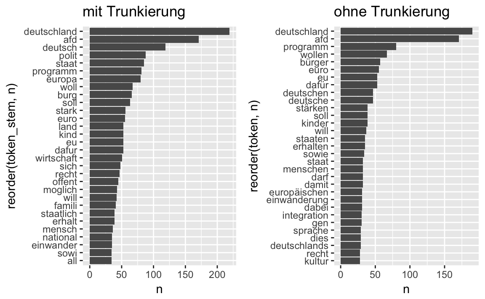

Kapitel 16 Vertiefung: Textmining


Lernziele:
- Sie kennen zentrale Ziele und Begriffe des Textminings.
- Sie wissen, was ein ‘tidy text dataframe’ ist.
- Sie können Worthäufigkeiten auszählen.
- Sie können Worthäufigkeiten anhand einer Wordcloud visualisieren.
In diesem Kapitel benötigte R-Pakete:
library(tidyverse) # Datenjudo
library(stringr) # Textverarbeitung
library(tidytext) # Textmining
library(pdftools) # PDF einlesen
library(downloader) # Daten herunterladen
library(lsa) # Stopwörter
library(SnowballC) # Wörter trunkieren
library(wordcloud) # Wordcloud anzeigenEin großer Teil der zur Verfügung stehenden Daten liegt nicht als braves Zahlenmaterial vor, sondern in “unstrukturierter” Form, z.B. in Form von Texten. Im Gegensatz zur Analyse von numerischen Daten ist die Analyse von Texten weniger verbreitet bisher. In Anbetracht der Menge und der Informationsreichhaltigkeit von Text erscheint die Analyse von Text als vielversprechend.
In gewisser Weise ist das Textmining ein alternative zu klassischen qualitativen Verfahren der Sozialforschung. Geht es in der qualitativen Sozialforschung primär um das Verstehen eines Textes, so kann man für das Textmining ähnliche Ziele formulieren. Allerdings: Das Textmining ist wesentlich schwächer und beschränkter in der Tiefe des Verstehens. Der Computer ist einfach noch (?) wesentlich dümmer als ein Mensch, zumindest in dieser Hinsicht. Allerdings ist er auch wesentlich schneller als ein Mensch, was das Lesen betrifft. Daher bietet sich das Textmining für das Lesen großer Textmengen an, in denen eine geringe Informationsdichte vermutet wird. Sozusagen maschinelles Sieben im großen Stil. Da fällt viel durch die Maschen, aber es werden Tonnen von Sand bewegt.
In der Regel wird das Textmining als gemischte Methode verwendet: sowohl qualitative als auch qualitative Aspekte spielen eine Rolle. Damit vermittelt das Textmining auf konstruktive Art und Weise zwischen den manchmal antagonierenden Schulen der qualitativ-idiographischen und der quantitativ-nomothetischen Sichtweise auf die Welt. Man könnte es auch als qualitative Forschung mit moderner Technik bezeichnen - mit den skizzierten Einschränkungen wohlgemerkt.
16.1 Zentrale Begriffe
Die computergestützte Analyse von Texten speiste (und speist) sich reichhaltig aus Quellen der Linguistik; entsprechende Fachtermini finden Verwendung:
Ein Corpus bezeichnet die Menge der zu analyisierenden Dokumente; das könnten z.B. alle Reden der Bundeskanzlerin Angela Merkel sein oder alle Tweets von “@realDonaldTrump”.
Ein Token (Term) ist ein elementarer Baustein eines Texts, die kleinste Analyseeinheit, häufig ein Wort.
Unter tidy text versteht man einen Dataframe, in dem pro Zeile nur ein Term steht (Silge und Robinson 2016).
16.2 Grundlegende Analyse
16.2.1 Tidy Text Dataframes
Basteln wir uns einen tidy text Dataframe. Wir gehen dabei von einem Vektor mit mehreren Text-Elementen aus, das ist ein realistischer Startpunkt. Unser Text-Vektor70 besteht aus 4 Elementen.
text <- c("Wir haben die Frauen zu Bett gebracht,",
"als die Männer in Frankreich standen.",
"Wir hatten uns das viel schöner gedacht.",
"Wir waren nur Konfirmanden.")Als nächstes machen wir daraus einen Dataframe.
text_df <- data_frame(Zeile = 1:4,
text = text)| Zeile | text |
|---|---|
| 1 | Wir haben die Frauen zu Bett gebracht, |
| 2 | als die Männer in Frankreich standen. |
| 3 | Wir hatten uns das viel schöner gedacht. |
| 4 | Wir waren nur Konfirmanden. |
Und “dehnen” diesen Dataframe zu einem tidy text Dataframe.
text_df %>%
unnest_tokens(output = wort, input = text) -> tidytext_df
tidytext_df %>% head
#> # A tibble: 6 x 2
#> Zeile wort
#> <int> <chr>
#> 1 1 wir
#> 2 1 haben
#> 3 1 die
#> 4 1 frauen
#> 5 1 zu
#> 6 1 bettDer Parameter output sagt, wie neue ‘saubere’ Spalte heißen soll; input sagt der Funktion, welche Spalte sie als ihr Futter betrachten soll (welche Spalte in tidy text umgewandelt werden soll).
In einem ‘tidy text Dataframe’ steht in jeder Zeile ein Wort (token) und die Häufigkeit des Worts im Dokument.
Überprüfen Sie, ob das stimmt: Betrachten Sie den Dataframe tidytext_df.
Das unnest_tokens kann übersetzt werden als “entschachtele” oder “dehne” die Tokens - so dass in jeder Zeile nur noch ein Wort (genauer: Token) steht. Die Syntax ist unnest_tokens(Ausgabespalte, Eingabespalte). Nebenbei werden übrigens alle Buchstaben auf Kleinschreibung getrimmt.
Als nächstes filtern wir die Satzzeichen heraus, da die Wörter für die Analyse wichtiger (oder zumindest einfacher) sind.
text_df %>%
unnest_tokens(wort, text) %>%
filter(str_detect(wort, "[a-z]"))
#> # A tibble: 24 x 2
#> Zeile wort
#> <int> <chr>
#> 1 1 wir
#> 2 1 haben
#> 3 1 die
#> # ... with 21 more rowsDas "[a-z]" steht für “alle Buchstaben von a-z”. In Pseudo-Code heißt dieser Abschnitt:
Nehme den Datensatz “text_df” UND DANN
dehne die einzelnen Elemente der Spalte “text”, so dass jedes Element seine eigene Spalte bekommt.
Ach ja: Diese “gedehnte” Spalte soll “Wort” heißen (weil nur einzelne Wörter drinnen stehen).
Ach ja 2: Diesees “dehnen” wandelt automatisch Groß- in Kleinbuchstaben um. UND DANN
filtere die Spalte “wort”, so dass nur noch Kleinbuchstaben übrig bleiben. FERTIG.
16.2.2 Text-Daten einlesen
Nun lesen wir Text-Daten ein; das können beliebige Daten sein71. Eine gewisse Reichhaltigkeit ist von Vorteil. Nehmen wir das Parteiprogramm der Partei AfD72. Vor dem Hintergrund des Erstarkens des Populismus weltweit und der großen Gefahr, die davon ausgeht - man blicke auf die Geschichte Europas in der ersten Hälfte des 20. Jahrhunderts - verdienterfordert der politische Prozess und speziell Neuentwicklungen darin unsere besondere Beachtung.
afd_url <- paste0("https://www.alternativefuer.de",
"/wp-content/uploads/sites/7/2016/05/",
"2016-06-27_afd-grundsatzprogramm_web-version.pdf")
afd_pfad <- "data/afd_programm.pdf"
download(afd_url, afd_pfad)
afd_raw <- pdf_text(afd_pfad)Mit head(afd_raw)können Sie sich den Beginn dieses Textvektor anzeigen lassen.
Mit download haben wir die Datei mit der Url afd_url heruntergeladen und als afd_pfad gespeichert. Für uns ist pdf_text sehr praktisch, da diese Funktion Text aus einer beliebige PDF-Datei in einen Text-Vektor einliest. head(afd_raw, 1) liest das 1. Element (und nur das erste) aus afd_raw aus.
Der Vektor afd_raw hat 96 Elemente (entsprechend der Seitenzahl des Dokzements); zählen wir die Gesamtzahl an Wörtern. Dazu wandeln wir den Vektor in einen tidy text Dataframe um. Auch die Stopwörter entfernen wir wieder wie gehabt.
afd_df <- data_frame(Zeile = 1:96,
afd_raw)
afd_df %>%
unnest_tokens(output = token, input = afd_raw) %>%
dplyr::filter(str_detect(token, "[a-z]")) -> afd_df
count(afd_df)
#> # A tibble: 1 x 1
#> n
#> <int>
#> 1 26396Eine substanzielle Menge von Text. Was wohl die häufigsten Wörter sind?
16.2.3 Worthäufigkeiten auszählen
afd_df %>%
na.omit() %>% # fehlende Werte löschen
count(token, sort = TRUE)
#> # A tibble: 7,087 x 2
#> token n
#> <chr> <int>
#> 1 die 1151
#> 2 und 1147
#> 3 der 870
#> # ... with 7,084 more rowsDie häufigsten Wörter sind inhaltsleere Partikel, Präpositionen, Artikel… Solche sogenannten “Stopwörter” sollten wir besser herausfischen, um zu den inhaltlich tragenden Wörtern zu kommen. Praktischerweise gibt es frei verfügbare Listen von Stopwörtern, z.B. im Paket lsa.
data(stopwords_de)
stopwords_de <- data_frame(word = stopwords_de)
stopwords_de <- stopwords_de %>%
rename(token = word)
# Für das Joinen werden gleiche Spaltennamen benötigt
afd_df %>%
anti_join(stopwords_de) -> afd_dfUnser Datensatz hat jetzt viel weniger Zeilen; wir haben also durch anti_join Zeilen gelöscht (herausgefiltert). Das ist die Funktion von anti_join: Die Zeilen, die in beiden Dataframes vorkommen, werden herausgefiltert. Es verbleiben also nicht “Nicht-Stopwörter” in unserem Dataframe. Damit wird es schon interessanter, welche Wörter häufig sind.
afd_df %>%
count(token, sort = TRUE) -> afd_count| token | n |
|---|---|
| deutschland | 190 |
| afd | 171 |
| programm | 80 |
| wollen | 67 |
| bürger | 57 |
| euro | 55 |
| dafür | 53 |
| eu | 53 |
| deutsche | 47 |
| deutschen | 47 |
Ganz interessant; aber es gibt mehrere Varianten des Themas “deutsch”. Es ist wohl sinnvoller, diese auf den gemeinsamen Wortstamm zurückzuführen und diesen nur einmal zu zählen. Dieses Verfahren nennt man “stemming” oder “trunkieren”.
afd_df %>%
mutate(token_stem = wordStem(.$token, language = "german")) %>%
count(token_stem, sort = TRUE) -> afd_count
afd_count %>%
top_n(10) %>%
knitr::kable(caption = "Die häufigsten Wörter im AfD-Parteiprogramm mit 'stemming'")| token_stem | n |
|---|---|
| deutschland | 219 |
| afd | 171 |
| deutsch | 119 |
| polit | 88 |
| staat | 85 |
| programm | 81 |
| europa | 80 |
| woll | 67 |
| burg | 66 |
| soll | 63 |
Das ist schon informativer. Dem Befehl SnowballC::wordStem füttert man einen Vektor an Wörtern ein und gibt die Sprache an (Default ist Englisch). Denken Sie daran, dass . bei dplyr nur den Datensatz meint, wie er im letzten Schritt definiert war. Mit .$token wählen wir also die Variable token aus afd_raw aus.
16.2.4 Visualisierung
Zum Abschluss noch eine Visualisierung mit einer “Wordcloud” dazu.
wordcloud(words = afd_count$token_stem,
freq = afd_count$n,
max.words = 100,
scale = c(2,.5),
colors=brewer.pal(6, "Dark2"))
Man kann die Anzahl der Wörter, Farben und einige weitere Formatierungen der Wortwolke beeinflussen73.
Weniger verspielt ist eine schlichte visualisierte Häufigkeitsauszählung dieser Art, z.B. mit Balkendiagrammen (gedreht).
afd_count %>%
top_n(30) %>%
ggplot() +
aes(x = reorder(token_stem, n), y = n) +
geom_col() +
labs(title = "mit Trunkierung") +
coord_flip() -> p1
afd_df %>%
count(token, sort = TRUE) %>%
top_n(30) %>%
ggplot() +
aes(x = reorder(token, n), y = n) +
geom_col() +
labs(title = "ohne Trunkierung") +
coord_flip() -> p2
library(gridExtra)
grid.arrange(p1, p2, ncol = 2)
Die beiden Diagramme vergleichen die trunkierten Wörter mit den nicht trunktierten Wörtern. Mit reorder ordnen wir die Spalte token nach der Spalte n. coord_flip dreht die Abbildung um 90°, d.h. die Achsen sind vertauscht. grid.arrange packt beide Plots in eine Abbildung, welche 2 Spalten (ncol) hat.
16.3 Aufgaben74
Richtig oder Falsch!?
- Unter einem Token versteht man die größte Analyseeinheit in einem Text.
- In einem tidytext Dataframe steht jedes Wort in einer (eigenen) Zeile.
- Eine hinreichende Bedingung für einen tidytext Dataframe ist es, dass in jeder Zeile ein Wort steht (beziehen Sie sich auf den tidytext Dataframe wie in diesem Kapitel erörtert).
- Gibt es ‘Stop-Wörter’ in einem Dataframe, dessen Text analysiert wird, so kommt es - per definitionem - zu einem Stop.
- Mit dem Befehl
unnest_tokenskann man einen tidytext Dataframe erstellen. - Balkendiagramme sind sinnvolle und auch häufige Diagrammtypen, um die häufigsten Wörter (oder auch Tokens) in einem Corpus darzustellen.
- In einem ‘tidy text Dataframe’ steht in jeder Zeile ein Wort (token) aber nicht die Häufigkeit des Worts im Dokument.
- Unter ‘Stemming’ versteht man (bei der Textanalyse), die Etymologie eines Wort (Herkunft) zu erkunden.
16.4 Befehlsübersicht
Tabelle ?? fasst die R-Funktionen dieses Kapitels zusammen.
| Paket..Befehl | Beschreibung |
|---|---|
| tidytext::unnest_tokens | Jedes Token (Wort) einer Spalte bekommt eine eigene Zeile in einem Dataframe |
| stringr::str_detect | Sucht nach einem String (Text) |
| downloader:: download | lädt eine Datei aus dem Internet herunter |
| dplyr::rename | Benennt Spalten um |
| anti_join | Führt Dataframes zusammen, so dass nicht matchende Einträge übernommen werden |
| wordcloud::wordcloud | Erstellt eine Wordcloud |
| ggplot2::labs | Fügt Titel oder andere Hinweise einem ggplot2-Objekt hinzu |
| ggplot2::coord_flip | Dreht die Achsen um 90 Grad |
16.5 Verweise
- Das Buch Tidy Text Minig (Julia und David 2017) ist eine hervorragende Quelle vertieftem Wissens zum Textmining mit R.
Literaturverzeichnis
Silge, Julia, und David Robinson. 2016. „tidytext: Text Mining and Analysis Using Tidy Data Principles in R“. The Journal of Open Source Software 1 (3). The Open Journal. doi:10.21105/joss.00037.
Julia, PhD Silge, und PhD Robinson David. 2017. Text Mining with R: A tidy approach. O’Reilly Media.
Nach dem Gedicht “Jahrgang 1899” von Erich Kästner↩
Ggf. benötigen Sie Administrator-Rechte, um Dateien auf Ihre Festplatte zu speichern.↩
https://www.alternativefuer.de/wp-content/uploads/sites/7/2016/05/2016-06-27_afd-grundsatzprogramm_web-version.pdf↩
https://cran.r-project.org/web/packages/wordcloud/index.html↩
F, R, F, F, R, R, F, F↩